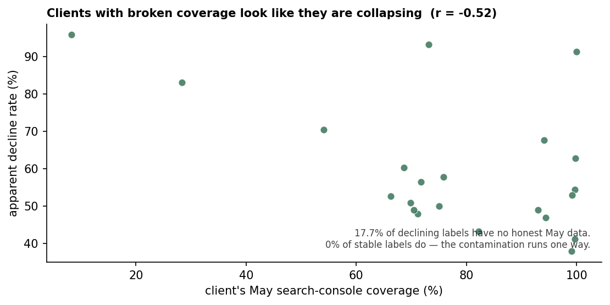
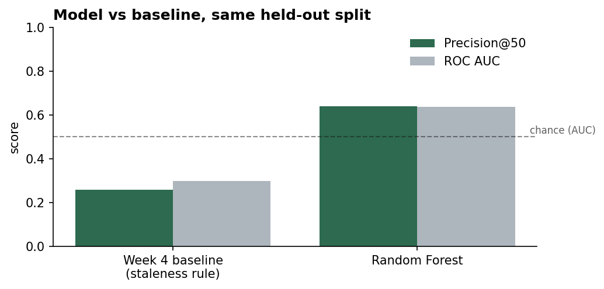
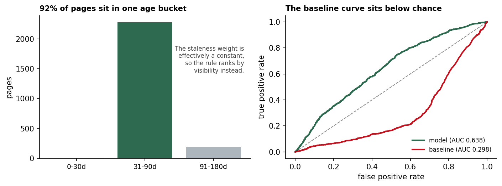
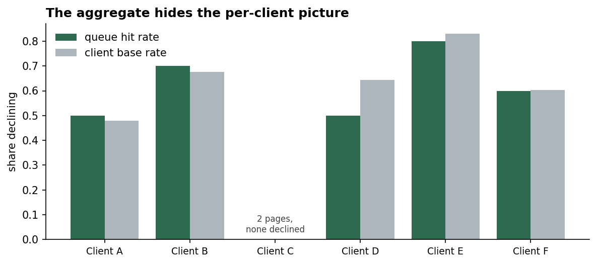

Abstract
Can a model identify which published pages are about to lose search visibility, early enough for a content team to act? Using 50,840 pages across 37 client portfolios from the FlyRank internship warehouse — features from February–April 2026, outcomes from May 2026 — I built a client-held-out Random Forest and compared it against the industry heuristic that stale content decays. The heuristic did not merely underperform: it scored a ROC AUC of 0.298, below chance, meaning it ranked pages consistently wrong, and I traced that inversion to a feature whose entire interquartile range collapsed to a single value. The model improved on it (Precision@50 of 0.64 against 0.26; AUC 0.638 against 0.298), but auditing that result surfaced three problems that matter more than the improvement: a one-directional label contamination affecting 17.7% of positive cases, an evaluation metric that returned seven different values across seven runs on a fixed seed, and a test set in which 87% of pages belonged to a single client. The output is decision-support for sequencing a weekly content review queue — not a count of declining pages, and not evidence that acting on them changes the outcome.
1 · Introduction
An SEO agency has more pages than review hours. A team managing tens of thousands of pages across dozens of clients cannot inspect them all, so the operative question is never which pages are declining — it is which twenty should I open this week.
That framing matters more than it might seem. It makes this a ranking problem rather than a classification problem, which is why every metric here is reported at Precision@K rather than as accuracy, and why the deliverable is an ordered queue rather than a set of predictions.
The starting hypothesis, and where it led
The conventional answer comes from industry practice and from FlyRank's own published research: content decays as it goes stale, so pages that have not been updated recently are the ones at risk. I built exactly that rule as a baseline.
It did not merely perform poorly. It scored a ROC AUC of 0.298. A rule carrying no information scores 0.5. This one scored well below that, which means it did not lack signal — it ordered pages consistently wrong. A content team following it would have been sent to the wrong pages.
Explaining that inversion is what this paper is actually about. Pursuing it surfaced three findings that bear on the result more than the model does:
- The label was contaminated in one direction. Missing search-console coverage in the outcome month could only ever produce a "declining" label, never a "stable" one — affecting 17.7% of positive labels and none of the negatives.
- The evaluation metric was unstable. Precision@50 returned seven different values across seven runs of an identical pipeline with a fixed seed, while ROC AUC moved by less than 0.008.
- The feature the rule was built on had no usable variance. Days since last update had a 25th, 50th, and 75th percentile all equal to 64 — there was no staleness variation available to learn from, in either direction.
A model was built, and it does rank better than the baseline. But the honest contribution of this work is the account of why that improvement is harder to measure than it looks, and what would have to be fixed before anyone acted on it.
2 · Data
The FlyRank ML Internship warehouse release — a pseudonymised export of production search performance, hosted as Parquet. Two tables are used: dim_content for page metadata and fact_content_daily_performance for daily per-page search and analytics metrics.
The daily fact table holds roughly 79 million rows. It is never downloaded. DuckDB reads directly over the hosted Parquet, touching only the columns and monthly partitions each query needs, which keeps the entire analysis inside a free Colab session.
All identifiers are hashed. No client names, page URLs, or search query text appear in the dataset or in this work. Figures below relabel the held-out clients as A–F.
Windows
| Window | Dates | Role |
|---|---|---|
| Feature | 2026-02-01 → 2026-04-30 | everything the model may see |
| Trailing | 2026-04-01 → 2026-04-30 | denominator of the outcome |
| Outcome | 2026-05-01 → 2026-05-31 | numerator of the outcome |
The separation is deliberate. A model meant to give a content team lead time must be restricted to what was knowable on 30 April, so no May data enters any feature.
What was excluded, and what that costs
| Rows | Clients | Filter |
|---|---|---|
| 50,840 | 37 | published, not deleted, joined to Feb–Apr performance |
| 33,296 | 29 | …with a defined outcome label |
| 2,477 | 6 | …held out from training for evaluation |
17,544 pages — 34.5% of the portfolio — were dropped for having an undefined label. These are pages with zero April impressions; a page that earned nothing in April cannot meaningfully decline by 25% in May, so the ratio is undefined. Excluding them is correct, but it narrows the scope of every claim here: this work is about pages that had measurable search visibility and lost it. It says nothing about pages that never achieved any — and those are a third of the inventory.
Coverage — the trap this dataset sets
The warehouse carries explicit availability flags, because a client's data connection can lapse. When it does, the underlying metrics arrive as zeros that mean not measured rather than measured as nothing.
| Window | GSC | GA4 |
|---|---|---|
| Feature (Feb–Apr) | 100.0% | 55.5% |
| Outcome (May) | 91.1% | — |
Every feature aggregate is guarded by an availability filter, so no dishonest zero enters the model's inputs. Feature-window coverage is complete. The outcome window is 91.1%, and that gap is where this paper's central methodological finding lives.
GA4 coverage at 55.5% is a separate and quieter problem: nearly half the portfolio has no honest engagement data, so every session, scroll, and engagement feature is imputed for those pages.
Class balance
The outcome is close to balanced by construction — 50.2% of labelled pages are marked declining, because a 25% month-over-month drop is roughly a coin flip in this portfolio.
Per client, it is not balanced at all: the declining rate ranges from 0% to 100% across the 29 clients. That range is the single most important fact in this section. It means a portfolio-level figure describes no individual client, and it is why every evaluation below is reported per client as well as in aggregate.
3 · Methodology
Assumptions
Three, stated so a reader can reject them. First, that a page's near-future search performance is partly predictable from its recent performance and static properties — if decline were driven entirely by algorithm updates or competitor moves, no feature here would help. Second, that a 25% month-over-month impression drop is a meaningful adverse outcome; the threshold is a convention chosen because it produces a near-balanced split. Third, that pages within a client are more alike than pages across clients — an assumption the results confirm by a wide margin.
Features
Nineteen features — sixteen numeric, three categorical — drawn entirely from the Feb–April window and static page metadata: search performance (impressions, clicks, impression-weighted average position, CTR), analytics (sessions, engaged sessions, engagement seconds, organic sessions, engagement rate), content properties (character count, word count, content age, days since last update), market signals (search volume, competition, CPC), and three categoricals (content type, main intent, competition level).
Excluded as label-derived: trend_direction, trend_pct, and is_declining_label, all identified in the Week 3 data contract. These encode the outcome and would leak it directly.
Excluded as inert: days_since_last_optimized, which is 100% null. It survived into the first model version before detection; removing it changed both metrics by nothing, because the imputer had been silently skipping the column throughout.
A feature-quality caveat: char_count and word_count are null for 52.2% of the modelling table and are median-imputed. No claim about content depth appears anywhere in this paper, and none should be drawn from it.
The feature the baseline was built on is degenerate in the middle
days_since_last_update has a standard deviation of 34.94, so it varies overall. But its 25th, 50th, and 75th percentiles are all exactly 64 — half the portfolio sits on a single value, with variation only in the tails.
A tree-based model splits on thresholds. A feature whose entire interquartile range collapses to one number offers almost no threshold worth splitting on. When the results below report that this feature contributed nothing measurable, the honest reading is not content freshness does not predict decline. It is that this window could not test the question.
Label definition — and a contamination found in it
A page is labelled declining if its May impressions are at or below 75% of its April impressions, stable otherwise, and undefined if it had zero April impressions.
The implementation used COALESCE(may_impressions, 0), so a page absent from the May partition was treated as having earned zero impressions.
Zero always clears the 0.75× threshold. So missing outcome data can only ever produce a "declining" label, and can never produce a "stable" one. The contamination is one-directional by construction.
| Label | Pages | No honest May coverage |
|---|---|---|
| declining | 16,711 | 2,964 (17.7%) |
| stable | 16,585 | 0 (0.0%) |
This is not a rare edge case. Across the 22 clients with at least 30 labelled pages, the correlation between a client's May coverage and its apparent decline rate is −0.52.

The fix is known and scoped: restrict the label to pages with honest May coverage. It is not applied in this paper. Applying it would change every number reported here, and this work's contribution is the identification and measurement of the problem rather than a corrected model. Restricting to clean labels narrows the per-client decline range at the top (0.96 → 0.91) and widens it at the bottom (0.38 → 0.27), so real between-client variation survives the correction — the contamination is not the whole explanation for it.
Why this generalises: COALESCE(x, 0) is a routine SQL idiom, correct in most contexts. Here it silently converts a data-availability event into an outcome, in one direction, invisibly from any results table. Nothing about the model's output would reveal it.
Baseline and validation design
The baseline ranks pages by a staleness bucket weight multiplied by log-dampened impressions — the industry heuristic, with visibility breaking ties. It is evaluated on exactly the same rows, split, and metric as the model.
Validation uses a client-grouped holdout: GroupShuffleSplit at 80/20 on client ID, so no client appears on both sides. 23 training clients (30,819 rows), 6 test clients (2,477 rows), zero overlap.
The model is RandomForestClassifier(n_estimators=300, min_samples_leaf=5, class_weight='balanced', random_state=42, n_jobs=1) inside a pipeline with median imputation and one-hot encoding, fitted on training data only. n_jobs=1 is deliberate — the results section explains why.
Leakage checks
Label-derived features: none present. All 19 features were checked against the banned list plus the intermediate label columns.
April in both windows. April sits inside the feature window and is the label's denominator, raising the possibility that the model learns mean reversion rather than decline risk. Tested: correlations with the label are −0.013 (impressions), −0.070 (clicks), and −0.131 (average position) — all weak and negative. Declining pages have fewer impressions (2,633 vs 2,861) and fewer clicks (4.5 vs 9.2) than stable ones, the opposite of what mean reversion predicts. The hypothesis is tested and rejected.
One result is genuinely odd and is not explained away: declining pages have a better average position (16.2 vs 20.8). Higher-ranking pages should not be more likely to decline. The most plausible reading connects to the contamination above — pages pulled into the declining class by missing May data carry whatever Feb–April position they had, including good ones. Confirming that requires re-running under the corrected label, which this work does not do.
4 · Results
| Method | Precision@50 | ROC AUC |
|---|---|---|
| Week 4 baseline (staleness × visibility) | 0.260 | 0.298 |
| Random Forest | 0.640 | 0.638 |
| Test base rate | 0.506 | — |

The model outperforms the baseline on both metrics. It is also, on its own terms, a weak classifier: an AUC of 0.638 means that given one declining page and one stable page at random, the model scores the declining one higher about 64% of the time. Chance is 50%. That is real signal and not much of it, and no claim here should be read as saying otherwise.
The baseline did not fail — it inverted
An AUC of 0.298 is the more interesting number. A rule with no information scores 0.5. This rule scored well below that, which means it ordered pages consistently wrong.

The bucket distribution explains it completely. 2,279 of 2,477 held-out pages — 92% — fall in the 31–90 day bucket, with 5 pages in 0–30 days and 193 in 91–180. The staleness weight is therefore a constant for nine pages in ten, and the baseline score collapses to log-impressions for almost the entire portfolio, with a small group of 91–180 day pages pushed to the bottom by a 15× weight penalty regardless of visibility.
So the rule was not ranking by staleness. It was ranking by visibility. And visibility runs the wrong way for this outcome: declining pages averaged 2,633 impressions against 2,861 for stable ones, and 4.5 clicks against 9.2. A rule that ranks high-visibility pages first is ranking the less likely to decline first — which is precisely what an AUC below 0.5 records.
Inverting the baseline's output gives an AUC of 0.702 — higher than the model's 0.638. The heuristic contained more usable signal than the model extracted. It was simply pointed the wrong way.
What the split design is worth
| Split | Test clients | Precision@50 | ROC AUC |
|---|---|---|---|
| naive row-level | 28 | 0.88 | 0.730 |
| client-grouped | 6 | 0.64 | 0.638 |
Identical model, features, and seed. The only difference is whether pages from the same client may appear on both sides. The naive split inflates Precision@50 by 38% and AUC by 14%. Pages within a client share site architecture, publishing cadence, connection quality, and demand seasonality — so a model that has seen some of a client's pages can recognise the client rather than the pattern. None of that transfers to a client it has never seen, which is the only case that matters in deployment.
A paper reporting 0.88 would not be lying about the arithmetic. It would be measuring something that never happens.
Where the signal is
| Feature | Permutation importance |
|---|---|
avg_position_weighted | 0.0455 |
ctr | 0.0338 |
clicks_90d | 0.0153 |
sessions_90d | 0.0044 |
sessions_organic_90d | 0.0028 |
search_volume | 0.0026 |
days_since_last_update | 0.0002 |
Two features carry almost everything: where a page ranks, and whether people click it when they see it. Everything else is close to noise.
days_since_last_update — the feature the entire baseline was built on — contributes 0.0002, indistinguishable from zero. As set out above, the careful reading is that this window could not test the freshness hypothesis, not that the hypothesis is false.
What Precision@50 is actually measuring
The headline 0.640 requires three qualifications, and together they matter more than the number.
It is one client. Of the top 50 predictions, 49 come from a single client and one from a second. Four of the six test clients contribute nothing. This is partly the model and substantially the test set's own composition — 2,152 of the 2,477 held-out pages (87%) belong to that one client.
Almost half the hits are unverifiable. 32 of the top 50 are labelled declining, but 14 of those 32 have no honest May coverage and were labelled declining by the COALESCE mechanism. For those pages we cannot distinguish a genuine decline from a lapsed data connection. Reported Precision@50 is 0.64; the verifiable floor, if every unverifiable page were wrong, is 0.36.
The metric itself is unstable. Across seven runs of an identical pipeline with a fixed seed — same rows, same split, same six test clients — Precision@50 measured 0.52, 0.58, 0.60, 0.62, 0.64, 0.66, and 0.70. ROC AUC over the same runs stayed within 0.632–0.639. Changing only n_jobs from −1 to 1, a parallelism setting with no mathematical effect, moved Precision@50 by two points and left AUC within 0.001.
The mechanism is that floating-point accumulation order varies with thread count and machine, perturbing borderline probabilities just enough to reshuffle which pages sit either side of rank 50. AUC integrates over the entire ranking and barely moves. The baseline, by contrast, returns exactly 0.260 and 0.298 on every run — it is arithmetic over fixed columns with no fitted model. The instability belongs to the model's probability estimates, not to the data or the split. Any Precision@50 figure here should be read to one significant figure.
What survives
Two claims hold at full strength. The baseline is inverted, and the reason is understood — AUC 0.298 is a property of the full ranking, not of any top-K cut, so none of the qualifications above touch it. Position and click-through carry the signal; update recency does not, in this window — that comes from AUC-based permutation over the whole test set rather than a top-50 cut.
One claim should be read as directional only: the model ranks better than the baseline. The direction held across every configuration run. The magnitude did not.
5 · Limitations & honest framing
What this result is measured on
| Portfolio pages joined to performance | 50,840 |
| Pages with a defined label | 33,296 (65%) |
| Pages the headline result is measured on | 2,477 (4.9%) |
| Clients the headline result is measured on | 6 of 37 |
| Outcome months observed | 1 |
Every number above rests on 4.9% of the portfolio, six clients, and a single month.
The test set is one client wearing a coat. Of the 2,477 held-out pages, 2,152 — 87% — belong to a single client. The remaining five contribute 325 pages between them, two of them contributing 14 and 2 pages respectively. Held-out base rates range from 0.00 to 0.83 across those six clients.
The label is contaminated and the contamination is not fixed
17.7% of declining labels rest on missing outcome data rather than observed decline, one-directionally. The fix is specified and is not applied anywhere in this paper. This is deliberate: identifying and measuring the problem is this work's contribution, and a corrected model would be a different piece of work reported against different numbers. It does mean every result here should be read as provisional.
The primary metric is not stable enough to quote precisely
Seven values across seven runs on a fixed seed. ROC AUC is the more trustworthy summary and is the figure to compare against.
A third of the portfolio is outside the question entirely
34.5% of pages were excluded for having zero April impressions, which makes a proportional decline undefined. This work is about pages that had visibility and lost it. It says nothing about pages that never achieved any — arguably a content team's larger problem.
Nothing here is causal
The model identifies association, not mechanism. A page ranking deep with weak click-through is more likely to decline in this data; that does not establish that improving either would prevent the decline. Testing that claim requires an experiment nobody has run here: refresh a randomly selected half of a flagged cohort, leave the other half, compare.
What would change the conclusions
The inverted baseline would be overturned by a feature window spanning a genuine range of update recency. The explanation above depends on 92% of pages sitting in one age bucket; across a window where staleness actually varies, the rule might discriminate normally.
The model's advantage would be confirmed or removed by evaluating across several grouped folds rather than one, reported per client. One fold cannot settle this.
The contamination's effect would be quantified by re-running the full pipeline under the corrected label.
The freshness hypothesis would become testable with a multi-month window. It is currently neither supported nor refuted by this work.
6 · Ranked recommendations
The model's output becomes a weekly review queue: the top 10 pages per client, ranked by risk score, each carrying a plain-language reason.
Per-client rather than global, and the data forces that choice. The global top 50 draws 49 of 50 pages from a single client, leaving four of six clients with nothing. An agency runs one account manager per client, so a global queue would hand most managers an empty list — not because their pages are healthy, but because whichever client has the most high-impression pages dominates any global cut. Ranking within each client produces 52 pages across all six.
Why pages surface
| Reason | Pages |
|---|---|
| above-median impressions, bottom-quartile CTR | 21 |
| bottom-quartile CTR | 15 |
| high score, no single dominant driver | 9 |
| ranks deep for this client | 4 |
| ranks deep + bottom-quartile CTR | 2 |
| ranks deep + above-median impressions, low CTR | 1 |
All thresholds are relative to the page's own client — an average position of 10 is unremarkable for one client and poor for another. Thirty-eight of 52 entries involve weak click-through; seven involve deep ranking. Two codes never fire: no queue page is stale relative to its client, and none has zero impressions. The queue is not surfacing neglected pages. It is surfacing visible, under-converting ones — a different population than the staleness rule would have produced.
What the ranking is worth

| Client | Pages | Declined | Queue hit rate | Base rate | Δ |
|---|---|---|---|---|---|
| A | 10 | 5 | 0.50 | 0.48 | +0.02 |
| B | 10 | 7 | 0.70 | 0.68 | +0.02 |
| C | 2 | 0 | 0.00 | 0.00 | 0.00 |
| D | 10 | 6 | 0.60 | 0.60 | 0.00 |
| E | 10 | 8 | 0.80 | 0.83 | −0.03 |
| F | 10 | 5 | 0.50 | 0.64 | −0.14 |
Aggregate: 59.6% against a 50.6% base rate. Per client: two are marginally above base rate, two are flat, two fall below it — no client clearly beats it.
This table should not be read as a per-client verdict. An earlier run of the identical pipeline swung one client by 24 points. Ten-page samples cannot establish which clients the ranking helps. The defensible statement is that ranking helps somewhat on average, and this evidence cannot say for whom.
Before acting on any entry
- Check impression volume. 25 of 52 queue pages have under 100 impressions in ninety days, where the ranking is close to noise.
- Check whether analytics is connected. 23 of 52 have no honest GA4 coverage, so engagement signals are imputed.
- Check the reason against the client's own console. If it isn't visible there, the feature window and the current state have diverged.
- Supply the business context the model cannot have — a discontinued product, an ended campaign, a deliberate deindexing, a seasonal trough.
One check came back clean: all 52 queue pages have complete coverage in the feature window. The contamination affects the outcome window, so it distorts how the model was trained and scored, not what it reads when ranking a page today.
What must not be done with this
- Do not automate content changes from it. The queue orders attention; humans decide.
- Do not report it as a count of at-risk pages. Precision@50 of 0.64 has a verifiable floor of 0.36.
- Do not deindex or delete on a queue position. The model's measured blind spot is exactly the already-low-visibility pages that keep declining — it reads "near the floor" as stability.
- Do not treat this as evidence that intervention works. The recommendation is look at these first, not fixing these will work.
For a content team with limited review hours, working this queue is a better use of the first ten hours than working alphabetically, by publication date, or by the staleness heuristic — which this work shows would point the wrong way. That is a modest claim, and it is the one the evidence supports.
7 · Reproducibility
Everything below is re-runnable from a fresh clone of the repository.
git clone https://github.com/chapcoda/flyrank-ML-starter
cd flyrank-ML-starter
pip install -q duckdb huggingface_hub scikit-learn pandas numpy matplotlibSet a Hugging Face read token with access to the warehouse as the environment variable HF_TOKEN (in Colab, as a Secret of that name — the notebooks read it via userdata.get("HF_TOKEN") and never contain a token). Then open work/notebooks/capstone.ipynb and run all cells in order. The notebook is self-contained: it rebuilds the feature table, label, split, model, queue, and every figure on this page.
Seeds and determinism
random_state=42 throughout. n_jobs=1 is required for reproducibility: with n_jobs=-1, floating-point accumulation order varies with the thread count the runtime allocates, and Precision@50 moves by up to two points as a result. This is documented above rather than hidden.
Environment: Python 3.13, scikit-learn 1.6.1, DuckDB, pandas, numpy, matplotlib. The sklearn version is printed by the setup cell and recorded in the metrics file, because Precision@50 has varied across library versions.
Holdout claim, and how to check it
The evaluation is a client-grouped holdout, not a sealed one-shot evaluation — the split is rebuilt deterministically from the seed on every run, and the model was refitted many times during development. I am not claiming a blind single evaluation and this repository should not be read as supporting one.
What is checkable: the cell that builds the split and the held-out frame is the MODEL, BASELINE, SPLIT, QUEUE cell in capstone.ipynb, and the metrics it produced are committed at work/capstone_metrics.json — both metrics, both windows, the model specification, the sklearn version, row and client counts, and the contamination figures. Every number on this page can be checked against a committed artifact rather than taken on faith.
Notebooks
| Notebook | What it establishes |
|---|---|
w03_data_contract.ipynb | grain, windows, and the availability traps |
w04_baseline_score.ipynb | the staleness baseline |
w05_model.ipynb | the model and its first comparison |
w06_validation_audit.ipynb | the audit that found the contamination |
w07_action_playbook.ipynb | the per-client queue |
capstone.ipynb | this paper, end to end |
The full write-up, structured against the internship's rubric axes, is at work/capstone_report.md.
The label fix described above is specified but not applied. Any re-run reproduces the contaminated label, deliberately, so that the reported numbers match.
8 · Acknowledgments & data credit
Built on the FlyRank ML Internship dataset — a pseudonymised export of production search performance covering roughly 79 million daily page-level records across 37 client portfolios.
Data provided by FlyRank.
All identifiers in this work are hashed. No client names, page URLs, or search query text appear in the dataset or in this paper.